2026年北京顺义区九年级学业水平考试历史试题 原卷解析
2026年北京市初中学业水平考试（顺义区）
历史试卷
一、本部分共16题，每题1.5分，共24分。在每题列出的四个选项中，选出最符合题目要求的一项。
1. 考古发现是了解历史的重要依据。以下考古发现可作为北京地区原始农业起源和发展证据的是（ ）
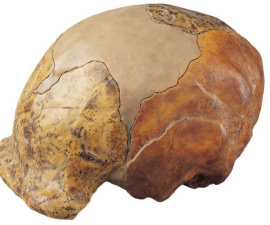 | 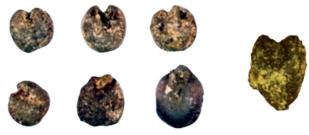 | 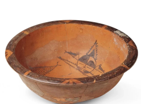 | 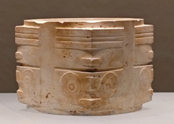 |
A. 周口店北京人遗址出土的头盖骨化石
B. 北京门头沟东胡林遗址出土的炭化粟和黍
C. 陕西西安半坡遗址出土的人面鱼纹彩陶盆
D. 浙江杭州良渚古城遗址出土的玉琮
【答案】B
【解析】
【详解】A.北京人头盖骨化石用于研究北京人体质特征，北京人以采集狩猎为生，尚未出现原始农业，不符合要求，错误。
B.东胡林遗址位于北京门头沟，符合“北京地区”的要求，出土的炭化粟和黍是人工栽培的农作物，可直接证明北京地区原始农业的起源与发展，符合要求，正确。
C.半坡遗址位于陕西西安，不属于北京地区，不符合要求，错误。
D.良渚玉琮出土于浙江杭州，是礼仪玉器，和原始农业无关，地点也不符合要求，错误。
2. 为了适应国家统一的需要，秦始皇大力推行了一系列巩固统一的措施。其中为改变以往币制混乱的状况、加强国家对经济的管理而实行的措施是（ ）
A. 奖励军功B. 统一货币C. 设立刺史D. 释放奴婢
【答案】B
【解析】
【详解】A.奖励军功是商鞅变法的军事举措，不属于秦始皇统一后的经济措施，和整顿币制无关，错误。
B.秦始皇统一全国货币，以圆形方孔半两钱作为法定货币，结束战国各国货币形制不一的乱象，强化国家对经济的管控，符合题意，正确。
C.设立刺史是西汉汉武帝时期的监察制度，秦朝不存在该官职，时间不符，错误。
D.释放奴婢并非秦始皇推行的政策，也无法解决货币混乱问题，错误。
3. 某历史小组要制作“中国古代科技成就”主题展板，已经收集了“蔡伦与造纸术、毕昇与活字印刷术、宋应星与《天工开物》”等素材。下列内容还可纳入该展板的是（ ）
A. 司马迁与《史记》B. 王羲之与《兰亭集序》
C. 祖冲之与圆周率D. 曹雪芹与《红楼梦》
【答案】C
【解析】
【详解】A.司马迁与《史记》属于史学著作，不属于科技成就，错误。
B.王羲之与《兰亭集序》属于书法艺术，不属于科技成就，错误。
C.祖冲之与圆周率是古代数学领域的重要科技成果，符合主题，正确。
D.曹雪芹与《红楼梦》属于古典文学作品，不属于科技成就，错误。
4. 以下示意图中横线处应填的历史人物是（ ）
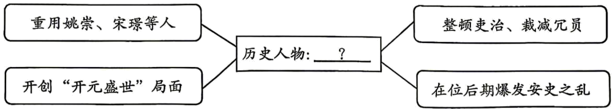
A. 秦始皇B. 汉武帝C. 唐玄宗D. 宋太祖
【答案】C
【解析】
【详解】A.秦始皇是秦朝开国君主，统一六国建立中央集权制度，与题干史实不符，错误。
B.汉武帝是西汉巩固大一统的帝王，与题干内容无关，错误。
C.题干中“重用姚崇、宋璟”“开创开元盛世”“整顿吏治”“在位后期爆发安史之乱”都是唐玄宗统治时期的典型史实，正确。
D.宋太祖是北宋开国皇帝，主要事迹是建立北宋、加强君主专制中央集权，与题干史实不符，错误。
5. 北宋时期，枢密院为中央最高军政指挥机构。下表梳理了其任职人员的相关情况。据此表明北宋（ ）
| 文职出身 | 武职出身 | 文职出身占总人数比例 | 武职出身占总人数比例 |
枢密院正职 | 54人 | 18人 | 73.9% | 24.6% |
枢密院副职 | 108人 | 21人 | 83.7% | 16.2% |
A. 实行崇文抑武的政策B. 军队战斗力得到提高
C. 解除统兵将领的兵权D. 与辽保持长期的和平
【答案】A
【解析】
【详解】A.表格中文职出身者在枢密院正副职中占比远高于武职（正职文职73.9%vs武职24.6%；副职文职83.7%vs武职16.2%），可知北宋实行重文轻武的政策，正确。
B.重文轻武政策导致军队战斗力下降，而非提高，与史实不符，错误。
C.解除统兵将领兵权是宋初“杯酒释兵权”等措施，与表格中任职人员出身比例无直接关联，错误。
D.与辽保持长期和平是澶渊之盟（1005年）的结果，表格数据无法体现这一关系，错误。
6. 元代的青花瓷是以高岭土制备瓷胎，用来自波斯的含钴矿物颜料绘制蓝色纹饰，经高温烧制而成。其纹饰既有中国传统的缠枝牡丹、龙凤纹图案，又常见伊斯兰风格的几何纹、阿拉伯文装饰等。上述材料可用于研究（ ）
A. 市民阶层的兴起B. 经济作物的推广C. 航海技术的发展D. 中外的交流交往
【答案】D
【解析】
【详解】A.材料围绕元代青花瓷的原料、纹饰风格展开，侧重中外文化与物资的互通，并非反映市民阶层兴起，错误。
B.材料聚焦手工业器物的特色，没有体现农业领域经济作物推广的相关内容，错误。
C.材料介绍的是瓷器工艺与艺术风格，和航海技术发展没有关联，错误。
D.青花瓷采用域外颜料、纹饰融合多元风格，直观体现出当时中外之间的交流交往，正确。
7. 以下时间轴反映的主题是（ ）
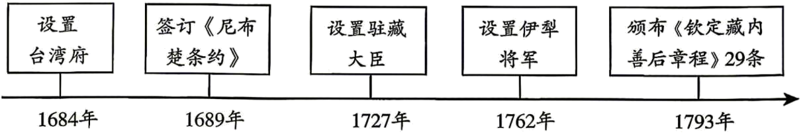
A. 东晋南朝时期江南地区的开发
B. 隋朝的统一与灭亡
C. 金与南宋的对峙
D. 统一多民族国家的巩固和发展
【答案】D
【解析】
【详解】A.东晋南朝江南开发是魏晋南北朝时期的内容，和题干时间、事件均不符，错误。
B.隋朝存在于公元6-7世纪，与题干事件时间不符，错误。
C.金与南宋的对峙是宋朝时期的内容，与题干事件时间、内容均不符，错误。
D.设置台湾府管理台湾、签订《尼布楚条约》划定东北边界、设置驻藏大臣管理西藏、设置伊犁将军管理新疆、颁布《钦定藏内善后章程》规范对西藏的管理，全部都是清朝前期巩固边疆、维护国家统一的措施，符合“统一多民族国家的巩固和发展”的主题，正确。
8. 洋务运动期间创办了京师同文馆、福州船政学堂等一批新式学堂。这些学堂采用新的教学组织形式、课程设置和教学方法，培养了一批新式人才。由此可知这些新式学堂的创办（ ）
A. 推动了近代教育的发展B. 瓦解了传统的小农经济
C. 掀起了发展实业的热潮D. 揭开了战略进攻的序幕
【答案】A
【解析】
【详解】A.洋务运动期间创办的京师同文馆、福州船政学堂等新式学堂，采用新的教学组织形式、课程设置和教学方法，培养了一批新式人才，开启了中国教育近代化的进程，正确。
B.传统小农经济的瓦解主要是鸦片战争后外国资本主义经济入侵的结果，与洋务运动新式学堂的创办无关，错误。
C.发展实业的热潮出现在甲午中日战争之后，并非洋务运动新式学堂带来的影响，错误。
D.“战略进攻”是军事领域的概念，与洋务运动的教育改革无关，错误。
9. 下面呈现了某校同学排演历史剧的各幕名称。据此判断该剧本名为（ ）
第一幕：武昌起义 第二幕：民国建立 第三幕：帝制终结 第四幕：约法颁布 |
A. 扶清灭洋B. 走向共和C. 公私合营D. 国防建设
【答案】B
【解析】
【详解】A.扶清灭洋是义和团运动的口号，和辛亥革命无关，错误。
B.武昌起义爆发后，中华民国成立，两千多年君主专制制度结束，《中华民国临时约法》颁布，完整展现了中国从帝制走向民主共和的历程，契合剧本全部内容，正确。
C.公私合营是三大改造时期对资本主义工商业改造的方式，属于建国后的历史，错误。
D.国防建设主题为新中国军事、国防发展，和辛亥革命剧情无任何关联，错误。
10. 下列两项20世纪50年代取得的成就得益于（ ）
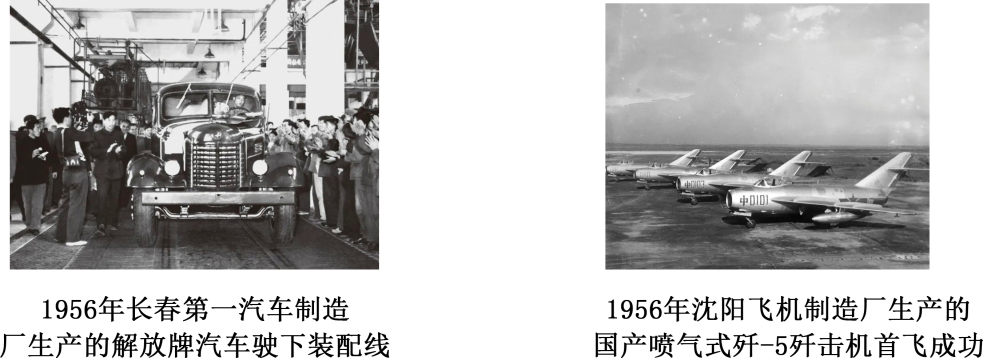
A. 土地改革的开展B. 第一个五年计划的实行
C. 经济特区的建立D. 西部大开发政策的颁布
【答案】B
【解析】
【详解】A.土地改革开展于1950-1952年，核心作用是废除封建土地制度，和题干工业成就无关，错误。
B.题干中1956年长春第一汽车制造厂生产解放牌汽车、1956年沈阳飞机制造厂生产国产歼-5歼击机，都是1953-1957年第一个五年计划期间的典型工业成就，正确。
C.经济特区建立是改革开放新时期（1980年起步），时间不符合，错误。
D.西部大开发是20世纪90年代后提出的发展政策，时间与内容都不符合，错误。
11. 1971年10月，新闻媒介就某一事件评论道：“中国是在自己不在场的情况下，受到联大三分之二以上国家的祝福，使联合国发生根本变化”。这一事件是（ ）
A. 新中国同苏联等国建立外交关系
B. 中国代表团在万隆参加亚非会议
C. 中国恢复了在联合国的合法席位
D. 中美签署并发表了《联合公报》
【答案】C
【解析】
【详解】A.新中国与苏联等国建交发生在1949年，时间与题干1971年10月不符，错误。
B.万隆亚非会议召开于1955年，时间不符，且会议地点在印尼万隆，和联合国无关，错误。
C.题干关键信息“1971年10月、联大、三分之二以上国家投票”，1971年第26届联合国大会以压倒性多数通过决议，恢复中华人民共和国在联合国的一切合法权利，投票表决时中国代表并未在场，完全匹配材料描述，正确。
D.中美《联合公报》签署于1972年尼克松访华期间，时间不符，且属于中美双边外交，和联合国大会无关，错误。
12. 历史解释是客观地认识和评判历史的态度和方法。下列属于历史解释的是（ ）
A. 8世纪，查理成为法兰克王国国王
B. 1453年，奥斯曼帝国攻破君士坦丁堡
C. 1689年英国议会通过了《权利法案》
D. 法国大革命摧毁了法国封建君主统治
【答案】D
【解析】
【详解】A.该选项只是客观陈述人物、时间与史实，单纯记录历史事件，属于历史叙述，并非历史解释，错误。
B.该选项直白描述事件发生的时间和过程，只做事实记录，属于历史叙述，错误。
C.该选项客观交代法案颁布的时间与主体，仅陈述基本史实，属于历史叙述，错误。
D.该选项并非单纯记录事件，而是分析、评价法国大革命带来的历史影响与历史意义，是对历史事件的解读和评判，属于历史解释，正确。
13. 欧洲与亚洲、非洲、美洲之间建立起了直接的商业联系，往来日益密切。世界开始连为一个整体，世界的观念也从此逐步确立起来。以上材料说明的是（ ）
A. 文艺复兴的背景B. 新航路开辟的影响
C. 德国分裂的原因D. 欧共体建立的过程
【答案】B
【解析】
【详解】A.文艺复兴的背景是14-16世纪欧洲思想文化运动，与商业联系、世界连为一体无直接关系，错误。
B.新航路开辟后，欧洲与亚洲、非洲、美洲建立了直接商业联系，世界开始连为一个整体，正确。
C.德国分裂的原因主要是二战后冷战格局，与材料无关，错误。
D.欧共体建立是20世纪欧洲一体化进程，时间不符，错误。
14. “南美解放者杯”是由南美洲足球联合会举办的南美洲最高级别俱乐部赛事。与这一赛事名称有关的人物是（ ）
A. 玻利瓦尔B. 托尔斯泰C. 章西女王D. 赫鲁晓夫
【答案】A
【解析】
【详解】A.玻利瓦尔带领南美人民摆脱西班牙殖民统治，被称为“南美解放者”，为了纪念领导南美独立运动的玻利瓦尔，赛事命名为“南美解放者杯”，正确。
B.托尔斯泰是俄国著名文学家，与南美解放无关，错误。
C.章西女王是印度民族大起义的民族英雄，属于亚洲反殖民人物，错误。
D.赫鲁晓夫是苏联领导人，与南美解放无关，错误。
15. 20世纪20年代末，资本主义世界爆发了规模空前的经济大危机，各国政府纷纷采取措施应对。下列示意图中①处应填（ ）
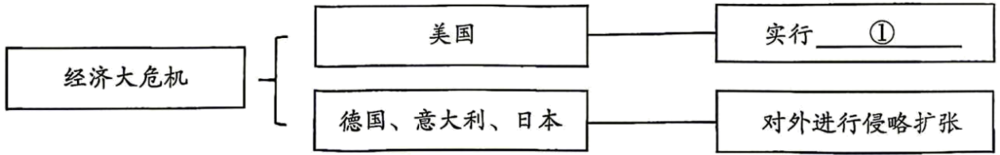
A. 明治维新B. 新经济政策C. 罗斯福新政D. 马歇尔计划
【答案】C
【解析】
【详解】A.明治维新是19世纪60年代日本的资产阶级改革，时间、背景均不符合，错误。
B.新经济政策是1921年苏俄探索社会主义建设的经济政策，和美国应对经济大危机无关，错误。
C.面对经济大危机，美国罗斯福政府推行罗斯福新政，通过国家干预经济缓解了危机，正确。
D.马歇尔计划是二战后美国援助西欧的冷战政策，时间不符，错误。
16. 1942年1月，美、英、苏、中等26个国家的代表在华盛顿签署《联合国家宣言》。签字国保证使用自己的全部军事和经济资源参与战争，相互合作，决不单独同敌人停战议和。该“宣言”的签署（ ）
A. 标志着世界反法西斯同盟正式形成
B. 重申《开罗宣言》的条件必须实施
C. 使美、苏两国的对抗冲突不断加剧
D. 推动了世界经济全球化趋势的发展
【答案】A
【解析】
【详解】A.《联合国家宣言》的签署，标志着世界反法西斯同盟正式建立，各国形成统一作战阵线，正确。
B.《开罗宣言》发布于1943年，时间、文件主体均与本题无关，错误。
C.美苏战时属于同盟协作关系，该宣言缓和双方矛盾，并未加剧对抗冲突，错误。
D.《联合国家宣言》签署的核心目的是战时军事结盟抗击法西斯，和经济全球化发展无直接关联，错误。
二、本部分共3题，共36分。
17. 循迹·传承
材料一 2024年9月习近平总书记参观了宝鸡青铜器博物院，在青铜器“何尊”前驻足凝视
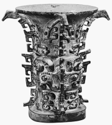 何尊 | 现藏于宝鸡青铜器博物院。何尊高38.5厘米，口径28.8厘米重14.6千克。通体有四道镂空大扉棱，以雷纹为底，口沿下饰蕉叶纹与蛇纹，颈部饰蚕纹，中腰与圈足饰兽面纹。粗大卷曲的兽角从器物表面凸起，其纹饰采用高浮雕与浅浮雕相结合的手法，结合三层花装饰手法，造型浑厚庄重 |
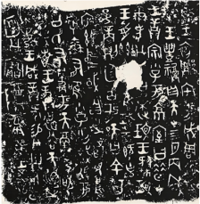 何尊底部铭文 | 何尊内底铸有铭文12行，共122字。记载了周成王继承周武王遗志，营建成周洛邑之事及对宗室小子“何”的训诰，并提及文王受天命、武王克商等事件。与《尚书》《逸周书》等古代文献记载相合。其中“宅兹中国”是“中国”一词最早的文字记载，也是“中国”作为一个词组的首次亮相，意指“天下的中心” |
材料二 2025年12月，习近平总书记在四川省成都市同法国总统马克龙参观了某著名水利工程
该水利工程综合利用了地形及水势特点，通过筑建鱼嘴、开凿宝瓶口将岷江水引入平原腹地，用于防洪、灌溉和水运，使成都平原由“泽国”“赤盆”变为沃野千里的“天府之国”。2025年，全长近30公里的三黄支渠正式通水，使岷江水首次流进川南。岷江水的到来，为当地发展优质粮油、果蔬产业注入“水动力”。现在该水利工程灌区年供水总量稳定在70亿立方米以上，为四川省提供了近1/4的粮食产量，贡献了全省近一半的地区生产总值，是名副其实的“米袋子”和“钱袋子” | 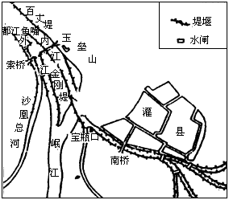 |
材料三 2026年2月10日，习近平总书记在北京市东城区隆福寺街区进行考察。习近平总书记指出，要推动中华优秀传统文化创造性转化、创新性发展。老字号藏于市井，载着文脉，用时光镌刻着属于国人的味道与记忆。稻香村零号店推出了钟鼓楼等京城地标样式的立体造型糕团依托国潮美学元素吸引年轻人。六必居研发出爆炒下饭酱、二八酱冰激凌等产品，在满足美味的同时契合了大众的现实需求。老招牌借助直播带货逐渐走进千家万户，同时入驻各地非遗体验馆。有关部门连年开展“老字号嘉年华”活动、举办中华老字号创新发展大会、设立老字号展馆等。越来越多的老字号跳出“旧”标签，用“新”语言讲述岁月故事。
——摘编自新华社《老字号闯新路》
（1）依据材料一并结合所学，分别从艺术审美和历史价值两个角度分析何尊承载的信息。说说出土文物与文献记载之间的关系。
（2）依据材料二并结合所学，写出该水利工程的名称及其主持修建者。谈谈对“此工程不仅造福当时，而且泽被后世”这一观点的理解。
（3）依据材料三，指出老字号创新发展的表现。结合生活实际，请你对“老字号闯新路”提出合理化建议。
【答案】（1）
艺术审美：何尊造型浑厚庄重，采用高浮雕浅浮雕结合的三层花装饰工艺，工艺精湛，体现了西周青铜铸造的高超水平，具有极高审美价值。
历史价值：何尊铭文印证了《尚书》等文献对周初营建成周、武王克商等史实的记载；铭文中的“宅兹中国”是“中国”一词最早的文字记载，对研究中国早期历史与文化认同有重大意义。
关系：出土文物作为实物史料，可以印证、补充文献记载，二者相互佐证，还原真实历史。
（2）
名称：都江堰；主持修建者：李冰。
理解：造福当时：都江堰建成后，兼具防洪、灌溉、水运功能，消除了岷江水患，使成都平原成为沃野“天府之国”，推动了战国时期秦国的区域开发。泽被后世：都江堰沿用至今，当代仍为四川地区提供稳定供水灌溉，支撑了四川的农业生产与经济发展，持续造福千秋。
（3）
创新表现：产品层面，融入国潮元素，结合大众新需求研发新品；营销层面，借助直播带货等新渠道，入驻非遗体验馆扩大影响力；政策层面，政府举办主题活动、设立展馆，为老字号发展提供平台。
建议：结合现代健康理念改良产品；对接文旅产业，开发老字号文化体验项目；推出文创周边吸引年轻群体（言之有理即可）。
【解析】
【小问1详解】
艺术审美：“造型浑厚庄重，纹饰采用高浮雕与浅浮雕相结合的手法，结合三层花装饰手法”→何尊造型浑厚庄重，采用高浮雕浅浮雕结合的三层花装饰工艺，工艺精湛，体现了西周青铜铸造的高超水平，具有极高审美价值。
历史价值：“何尊内底铸有铭文12行，共122字，记载了周成王营建成周洛邑之事及对宗室小子‘何’的训诰......其中‘宅兹中国’是‘中国’一词最早的文字记载”→何尊铭文印证了《尚书》等文献对周初营建成周、武王克商等史实的记载；铭文中的“宅兹中国”是“中国”一词最早的文字记载，对研究中国早期历史与文化认同有重大意义。
关系：“铭文记载了周成王营建成周洛邑之事及对宗室小子‘何’的训诰，并提及文王受天命、武王克商等事件，与《尚书》《逸周书》等古代文献记载相吻合”，可知出土文物（何尊铭文）作为实物史料，能够直接印证文献记载的可靠性；同时，“宅兹中国”作为“中国”一词最早的文字记载，补充了文献未明确记载的关键信息，二者相互佐证，共同还原西周早期的真实历史。
【小问2详解】
名称：“该水利工程结合利用了地形及水势特点，通过筑起鱼嘴、开凿宝瓶口将岷江引入平原湿地……使成都平原由‘泽国’‘赤盆’变为沃野千里的‘天府之国’”→该工程是都江堰，由战国时期秦国蜀郡郡守李冰主持修建。
理解：“使成都平原由‘泽国’‘赤盆’变为沃野千里的‘天府之国’”→都江堰消除了岷江水患，灌溉了大片农田，使成都平原成为沃野，推动了秦国的区域开发与农业发展，造福当时。“至今仍为四川地区提供稳定供水灌溉，支撑了四川的农业生产与经济发展”→都江堰沿用两千多年，至今仍持续发挥防洪、灌溉、水运等综合效益，支撑四川的农业生产与经济发展，泽被后世。
【小问3详解】
创新表现：“推出了钟鼓楼等京城地标样式的立体造型糕团等国潮元素吸引年轻人，六必居研发出藤椒下饭菜、二八香油辣椒油等产品”→融入国潮元素，结合大众新需求研发新品；“老招牌的直播带货走进千家万户，同时入驻各地非遗体验馆”→借助直播带货等新渠道，入驻非遗体验馆扩大影响力；“有关部门连年开展‘老字号嘉年华’活动、举办中华老字号创新大会、设立老字号展馆等”→政府举办主题活动、设立展馆，为老字号发展提供平台。
建议：结合材料中老字号守正创新的做法，围绕产品、文旅、品牌三个维度，从贴合现代健康需求、延伸文化产业链、吸引年轻消费群体的角度，提出具体可行的建议。
18. 船“说”历史
材料一
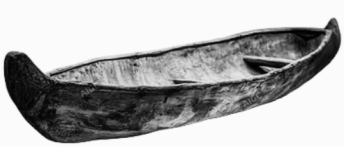 ①新石器时代独木舟 | 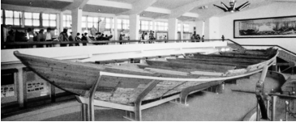 ②南宋海船 | 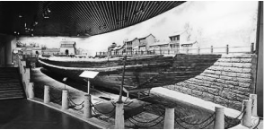 ③明代漕运护航船 |
出土于浙江跨湖桥遗址。距今8000-7000年，是迄今世界上发现最早的独木舟。舟体底部有几根横木，周围还发现若干木头遗存。综合分析，这是独木舟的木作加工现场 | 出土于福建泉州。海船残存长24.2米、宽9.15米。宋代海船设置水密隔舱，增加抗沉性和横向强度，提高了远洋航行的安全性。这一技术，在当时世界造船领域中居于领先地位 | 出土于山东梁山地区的京杭运河支流。船身呈柳叶形，全长21.8米，共有13个舱，其中两个是居住舱，其余为货舱。船舱内发现各种兵器、马具、货币以及生活用具 |
材料二 1802年，富尔顿前往苏格兰，实地考察运河中航行的蒸汽机船，学习相关技术。1806年他向博尔顿和瓦特工厂定制了一台新式蒸汽机，并于次年制造出一艘排水量为400吨的木质蒸汽机船。为答谢利文斯顿在行政与资金上的支持，富尔顿用其故乡之名将船定名为“克莱蒙特号”。该船试航成功后，富尔顿在纽约和奥尔巴尼两座城市之间开辟了一条旅客班轮航线。汽船航行不受天气与风向制约，班次准点可靠，深受旅客青睐，大幅提升了内河与近海的客运能力，同时收获了良好的商业效益。
——摘编自杨槱《轮船史》
材料三 党的二十大报告明确提出，发展海洋经济，保护海洋生态环境，加快建设海洋强国。“智飞”号商船的智能化、绿色化创新实践，将助推中国智能船舶乘风破浪、向海图强
“智飞”号系统简介 ▲自主航行系统：国内首个全流程自主研发的自主航行系统。集自动靠离泊、自主循迹等功能为一体，实现船舶自主航行 ○航行辅助系统：基于多方数据还原航行实景，融合国际避碰规则与实操经验，提供智能导航及航行建议 ★船用360 Plus：基于AR和AI的数据融合，是集盲区安全提示、场景模拟等功能为一体的智能视觉辅助系统，助力船只安全航行停靠 ◇智能电子海图：基于航行大数据和AI算法，集多维感知、气象预警等功能于一体。使得传统海图全面升级，实现海上信息态势重构 ◆远程驾驶系统：基于信息采集与平台调度，可实时监督、远程控制、预警监测，支持船岸联动、人机交互 |
（1）将材料一中的考古成果按所属的历史时期排序。（写序号）任选一项成果，说明其见证的历史。（示例除外）
示例：③明代漕运护航船；反映明朝时期漕运的情况，体现了中国古代航运体系的发展。
（2）依据材料二并结合所学，分析富尔顿成功制造出“克莱蒙特号”蒸汽机船的原因。写出此蒸汽机船发明的意义。
（3）依据材料三，说出“智飞”号系统的优势。谈谈你对国家加快建设海洋强国的认识。
【答案】（1）
排序：①②③。任选说明（示例）：
选①：①新石器时代独木舟；证明我国早在距今七八千年的原始社会就掌握了造船技术，反映了原始先民的手工业水平和早期水上交通的发展。
选②：②南宋海船；反映出宋代造船技术领先世界，水密隔舱技术提升了航行安全性，体现了宋代海外贸易的繁荣。
（2）
原因：第一次工业革命中瓦特改良蒸汽机，提供了动力基础；富尔顿提前考察学习，积累了技术经验；得到专业工厂提供的新式蒸汽机；获得了资金与行政支持。
意义：开创了蒸汽动力轮船航运的新时代，打破了自然风向天气对航行的限制，提升了航运能力，推动了近代交通运输业发展，便利了人员往来与经济交流，取得了良好商业效益。
（3）
优势：核心系统完全自主研发；融合人工智能、大数据、AR等高新技术，智能化程度高；功能完善，可全方位保障航行安全，同时符合绿色发展要求。
认识：加快建设海洋强国是我国新时代发展的重要国家战略，有利于推动海洋科技创新，发展海洋经济，保护海洋生态，维护我国海洋权益，助力中华民族的伟大复兴，符合我国发展的根本需求。
【解析】
【小问1详解】
排序：①新石器时代独木舟距今约8000-7000年，是迄今世界上发现最早的独木舟，见证了我国早在原始社会就已掌握造船技术，反映了早期水上交通的发展。②南宋海船的水密隔舱技术领先世界，提升了远洋航行的安全性，体现了宋代造船技术的高超水平与海外贸易的繁荣。③明代漕运护航船反映了明朝漕运的情况，体现了中国古代航运体系的发展。
任选说明（示例）：选①：“距今8000-7000年，是迄今世界上发现最早的独木舟。”→提炼证明我国早在距今七八千年的原始社会就掌握了造船技术；“综合分析，这是独木舟的木作加工现场”→提炼反映了原始先民的手工业水平和早期水上交通的发展。
选②：“这一技术，在当时世界造船领域中居于领先地位”→提炼反映出宋代造船技术领先世界；“宋代海船设置水密隔舱，增加抗沉性和横向强度，提高了远洋航行的安全性。”→提炼水密隔舱技术提升了航行安全性；“海船残存长24.2米、宽9.15米。”→提炼体现了宋代海外贸易的繁荣。
【小问2详解】
原因：“1806年他向博尔顿&瓦特工厂定制了一台新式蒸汽机”→提炼第一次工业革命中瓦特改良蒸汽机，提供了动力基础；
“富尔顿前往苏格兰，实地考察运河中航行的蒸汽机船，学习相关技术”→提炼富尔顿提前考察学习，积累了技术经验；
“1806年他向博尔顿和瓦特工厂定制了一台新式蒸汽机”→提炼得到专业工厂提供的新式蒸汽机；
“为答谢利文斯顿在行政与资金上的支持”→提炼获得了资金与行政支持。
意义：从技术革新角度、航行条件角度、交通发展角度、社会经济角度分析。
【小问3详解】
优势：“国内首个全流程自主研发的自主航行系统”→提炼核心系统完全自主研发；“基于AR和AI的数据融合”→提炼融合人工智能、大数据、AR等高新技术，智能化程度高；“基于多方数据还原航行实景，融合国际避碰规则与实操经验，提供智能导航及航行建议”→提炼功能完善，可全方位保障航行安全，同时符合绿色发展要求。
认识：从国家战略定位角度、科技发展和经济发展角度、国家安全与权益角度进行分析。
19. 邮票中的红色印记
材料一 中国邮政于2021年7月1日发行了一套《中国共产党成立100周年》纪念邮票。下表梳理了部分邮票的介绍
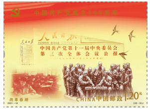 | 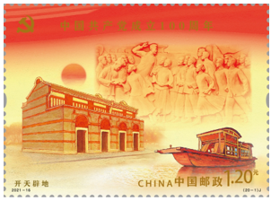 | 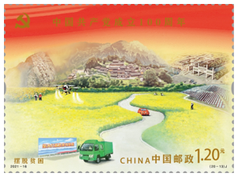 | 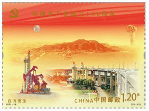 |
①图名：改革春潮 | ②图名：开天辟地 | ③图名：全面小康 | ④图名：自力更生 |
表现元素：十一届三中全会公报、小岗村大包干纪念雕塑等 | 表现元素：五四运动浮雕、上海党的一大会址、嘉兴南湖红船等 | 表现元素：国内生产总值突破100万亿、生态文明、抗击疫情等 | 表现元素：“两弹一星”、大庆油田、南京长江大桥、十三陵水库等 |
材料二 中国邮政于2025年9月3日发行了一套《中国人民抗日战争暨世界反法西斯战争胜利八十周年》纪念邮票。下表为其中部分邮票的相关情况介绍
邮票图名 | 相关史事 |
①奋起抗战 | 1931年9月18日，日本发动了九一八事变。事变爆发两天后，中共中央发表宣言，率先提出武装抗日的主张 |
②全民族抗战爆发 | 1937年7月7日，非法驻扎北平南郊的日军炮轰我军防地，驻卢沟桥和宛平城的中国守军奋起抵抗 |
③台儿庄战役 | 1938年3月，北路日军向台儿庄发起攻击，中国守军顽强抵抗，共歼敌1万余人 |
④论持久战 | 1938年5月，毛泽东发表《论持久战》，指出实行人民战争的路线，最后胜利一定属于中国 |
⑤百团大战 | 1940年8月至次年1月，彭德怀指挥八路军100多个团，在华北广阔的地域，对日军发动了一场大规模进攻 |
⑥伟大胜利 | 1945年9月3日，《新华日报》发表毛泽东的“庆祝抗日胜利，中华民族解放万岁”题词，人民欢庆抗战胜利 |
材料三 邮票素有“国家名片”之称，既能以小见大地展现国家形象，又是记录历史、传承文化的重要载体，邮票图像更是鲜活直观的历史再现。新中国成立后，政治形势与社会生活类题材贯穿整个邮票的发行史，且一直作为重心存在。此类题材的邮票，主要通过各类社会事件和人物主题来反映社会主义核心价值观。邮票图像选取的大多数都是党的历史上具有纪念意义的元素，例如重大历史事件发生的地点、历史人物、革命历史事迹等。这些为庆祝党的生日、国庆、人民军队成立日等发行的邮票激发着人们的爱国情怀，形成了一幅壮丽的历史画卷。
——摘编自冯雨昕《中国当代邮票图像研究》
（1）依据材料一，将上述邮票与相应的历史时期对应。（写序号，多选、错选不得分）结合所学，任选一个表现元素，写出其反映史事的历史意义。
时期 | 邮票 |
新民主主义革命时期 | A： |
社会主义革命和建设时期 | B：④ |
改革开放和社会主义现代化建设新时期 | C： |
中国特色社会主义新时代 | D： |
（2）从材料二中选择两张邮票，参照示例，对其反映史事的联系进行说明。（示例组合除外）
示例：选择③④
③台儿庄战役是抗战以来中国正面战场取得的最大胜利，振奋了中国军民的精神，坚定了抗战意志。
④《论持久战》阐明了中国共产党的抗日持久战战略总方针，大大增强了全国人民坚持抗战的信心。
联系：台儿庄战役的胜利和《论持久战》的发表都增强了全国人民抗战的信念和决心。
（3）依据材料三，分析邮票的特点。2026年是红军长征胜利90周年，请你为“红军长征纪念邮票”提出设计方案。（可从票面图案、文字内容、色彩搭配等角度进行描述）
【答案】（1）
对应序号：A；C；D
元素史事意义：
示例1：南湖红船/中共一大会址：标志着中国共产党的诞生，是中国历史上开天辟地的大事变，中国革命面貌从此焕然一新。
示例2：选十一届三中全会：作出改革开放的历史性决策，是新中国成立以来党的历史上具有深远意义的伟大转折，开启了改革开放和社会主义现代化建设新时期。
（2）
史事联系：
示例：选择①②
①1931年九一八事变后，中国开始局部抗战，中国共产党率先提出武装抗日主张，推动了抗日救亡运动的兴起。
②1937年七七事变是日本全面侵华的开始，中国全民族抗战由此爆发。
联系：日本侵华不断扩大，中国抗日战争从局部抗战发展为全民族抗战，推动了抗日民族统一战线的正式形成。
（其他合理组合均可，如选④⑤：《论持久战》阐明了中国共产党的持久战战略总方针，统一了全国抗战思想；百团大战沉重打击了日军，振奋了全国军民抗战信心。二者都体现了中国共产党在全民族抗战中的中流砥柱作用，增强了中国人民坚持抗战的决心。）
（3）
特点：是“国家名片”，可以小见大展现国家形象；是记录历史、传承文化的重要载体，能鲜活直观地再现历史；多以党史重大纪念事件、人物为题材，反映社会主义核心价值观，能激发民众爱国情怀。
设计方案：
示例：票面主图案为红军三大主力会宁会师的场景，背景搭配雪山草地元素，左下角绘出会宁会师楼；文字标注上方为“红军长征胜利九十周年纪念 1936-2026”，右下角标注“中国邮政 CHINA”；色彩以象征革命的红色为主色调，用灰蓝色烘托长征征程的艰苦感，整体庄重肃穆。（方案符合主题即可）
【解析】
【小问1详解】
对应序号：“新民主主义革命时期(A)”，是指1919-1949年这个阶段，“②开天辟地”主题中的“五四运动浮雕”涉及事件是1919年的五四运动；“上海党的一大会址、嘉兴南湖红船”涉及事件是1921年的中国共产党诞生，这些事件均属于新民主主义革命时期，所以②→A；“改革开放和社会主义现代化建设新时期（C）”，是指1978-2012年，“①改革春潮”主题中的“十一届三中全会公报”涉及事件是1978年的中共十一届三中全会、“小岗村大包干纪念雕塑”涉及的事件是1978年家庭联产承包责任制的推行，这些事件均属于改革开放和社会主义现代化建设新时期，所以①→C；“中国特色社会主义新时代”，是指2012年至今，“③全面小康”主题中的表现元素：“国内生产总值突破100万亿”是在2020年、“生态文明”于2012年开始落地推进”、“抗击疫情”从2020年起，这些事件均属于“中国特色社会主义新时代”，所以③→D。
元素史事意义：首先将材料中元素涉及的事件提炼出来，如“上海党的一大会址、嘉兴南湖红船”涉及事件是“中国共产党诞生”、“十一届三中全会公报”涉及事件是“中共十一届三中全会等，然后结合教材所学写出这些事件的历史意义即可。
【小问2详解】
史事联系：首先分析模板，得出格式为：首先从材料提炼出史事，然后分别叙述两件史事的过程及影响等，最后论述两者之间的联系”，然后按照题目要求排除③④组合后，选择两张邮票，按照分析出的格式作答。
示例：选择①②，首先①提炼出事件是“九一八事变”；②提炼出事件是“七七事变”，然后分别叙述这两件事的过程、作用，最后总结关联，落脚于抗战进程或中共的抗战贡献。（其他合理组合均可）
【小问3详解】
特点：“邮票素有‘国家名片’之称，既能以小见大地展现国家形象”→“是‘国家名片’，可以小见大展现国家形象”；“又是记录历史、传承文化的重要载体，邮票图像更是鲜活直观的历史再现”→“是记录历史、传承文化的重要载体，能鲜活直观地再现历史”；“新中国成立后……邮票图像选取的大多数都是党的历史上具有纪念意义的元素……这些为庆祝党的生日、国庆、人民军队成立日等发行的邮票激发着人们的爱国情怀”→“多以党史重大纪念事件、人物为题材，反映社会主义核心价值观，能激发民众爱国情怀”。
设计方案：首先以从材料中归纳的邮票特点为依据，再从票面、文字、色彩三个维度紧扣长征史实设计邮票，票面选用长征标志性场景与物件，如用“红军三大主力会宁会师的场景”为图案，用“雪山草地”作为背景搭配，票面角落用“会宁会师楼”突出地点；文字标注纪念主题“红军长征胜利九十周年纪念 1936-2026”与邮政标识“中国邮政 CHINA”，色彩搭配呼应革命内涵与长征环境即可。